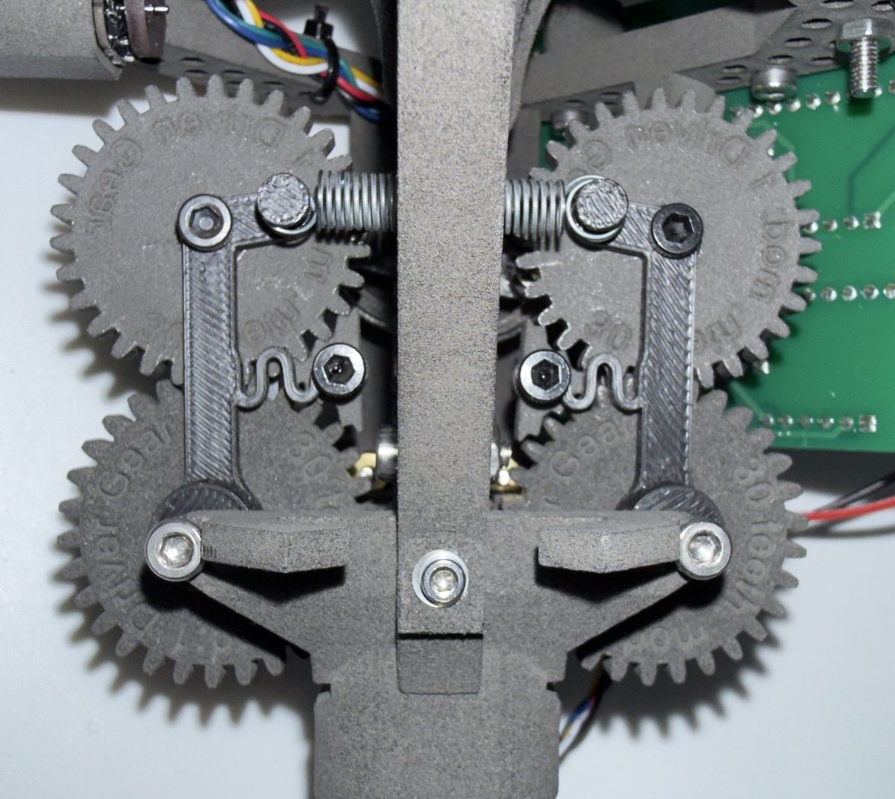
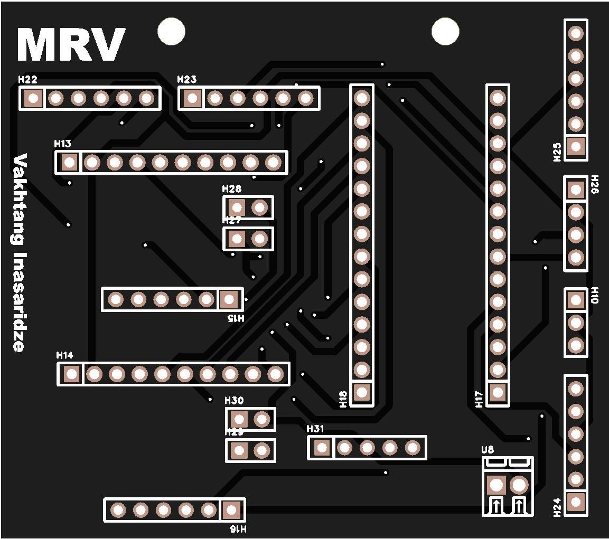

Why does a $200 arm miss?
A stock servo hits its speed limit, lags behind and lands on backlash.
Your command: a 60° move. Pick how fast.
How does calibration fix it?
Calibration measures those limits on your arm, so software can plan around them.
-
Record 20 minutes
The arm runs chirps, steps and sweeps chosen so each one isolates a few parameters.
Planned excitation, per joint Joint Motion Time Shoulder pan Chirp 0.1 to 5 Hz 3:00 Shoulder lift Steps ±20° 3:30 Elbow flex Steps ±20° 3:30 Wrist flex Chirp 0.1 to 5 Hz 3:00 Wrist roll Slow sweep 2:30 Gripper Open, close, hold 2:00 All Home and checks 2:30 Total 20:00 -
Fit every servo
Delay, gains, speed limit, backlash, friction and gravity, fitted per joint on your arm.
Servo model, shoulder lift Parameter Starting value Status Firmware gains P 16, D 32 Read from servo Speed limit 5.22 rad/s Pinned, firmware max Acceleration ramp 254 LeRobot default Zero offset Per arm Measured, phone level Backlash ±0.5° Prior, Menagerie Friction, stiction 0.8° error Fitted, public bench logs Command delay Not yet fitted To fit -
Correct each command
The model shapes each command before it is sent, so the joint arrives where the policy asked.
Target Command sent -
Measure at the tip
Accuracy is measured at the tip with a dial indicator, stock against calibrated, before any claim.
Gripper tip accuracy, ISO 9283 method Arm Poses Trials Result Stock 5 30 each Pending Calibrated 5 30 each Pending Dial indicator, 0.01 mm. Servos arrive 29 Oct.
Why not borrow the numbers?
Ready-made params come from the 7.4 V servo version: a different motor winding, so the twin is off.
| Run | Training error | Unseen logs |
|---|---|---|
| A, 1,844 trials | 23.7 mrad | 14.6 mrad |
| B, 13,562 trials | 23.4 mrad | 23.1 mrad |
| The training logs cannot tell these parameter sets apart; the right motions can. | ||
What else has been built?


What jumped in the film?
Before software, hardware: the last robot here was designed, printed, wired and cast from scratch, and it jumps 41 cm.


Who is building this?
I’m Vato. I studied mechanical engineering at Warwick and start an MEng at Berkeley in Fall 2027. Until then, I’m building this.
Cheap robot arms are good enough to do real work. What holds them back is that nobody models their servos, so the arm doesn’t go where the policy tells it to.
The goal: a $200 arm makes my breakfast every morning, learned from a video of my own hands. That needs an arm that goes exactly where it is told, so that is where I’m starting.
Vato Inasaridze
Founder, Vato Labs. inasaridzevato@gmail.com
What has happened so far?
Calibration motions tested in sim: twins agree within 0.2°, so real servo data is the next lever
Servo twin fitted on public 12 V logs: 0.8° error on unseen moves, vs 8.3° with ready-made params
Lab set up: printer calibrated, servo fit gauges printed, robot station configured
1st place of 60 builders, Physical AI Hack London
Top 8 of about 180, Accel AI Innovate London